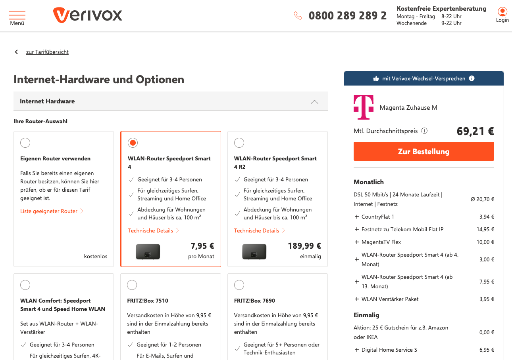

Selected Work
A selection of product work focused on clarity, experimentation, and measurable business impact.
Offer Page Basket – Verivox
A conversion-focused basket redesign that brought structure, persistent guidance, and clearer tariff context to one of the highest-friction steps in the broadband funnel.

Filling the Info Gap – Verivox
A multi-touchpoint initiative that reduced decision anxiety through clearer router guidance and contextual FAQs across the broadband journey.
Up to +7,1% uplift and €2,7M net revenue impact.
A repeated pattern in my work
I tend to work on products where users face uncertainty before they can act. The common thread is turning complex choices into clearer flows, validating changes through experiments, and scaling what drives measurable business results.
Automation and AI tools that improve decision speed
Check24 Price Scraper
Competitive monitoring automation that saved team hours and enabled faster pricing reactions.
8+ hours saved per week and +600 incremental monthly conversions.
Experiment Memory Agent
AI assistant that turns scattered A/B testing history into reusable product decision intelligence.
Built to reduce repeated work and increase experimentation velocity.